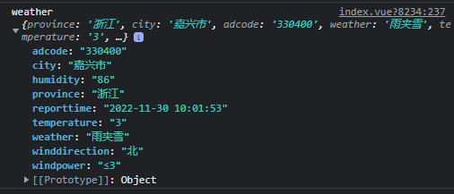
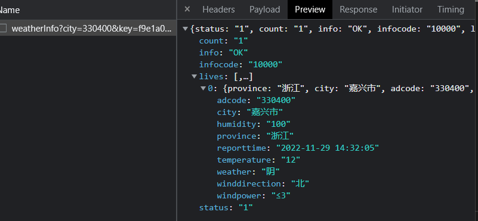

# 天气
import { getWeather } from 'hsja-utils'
await getWeather()
@param{String}cityCode 城市编码，默认330400
@param{String}key 高德api调用key，默认442b97f4e1c843da3a75a18528868070
@param{String}extensions='base' 气象类型 base:返回实况天气(默认) all:返回预报天气
@return{Object} 天气数据
humidity：湿度；temperature：温度；winddirection：风向；windpower：风力
接口返回数据
← 正则